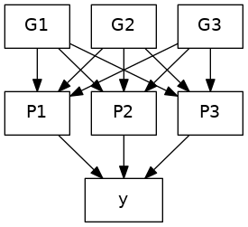
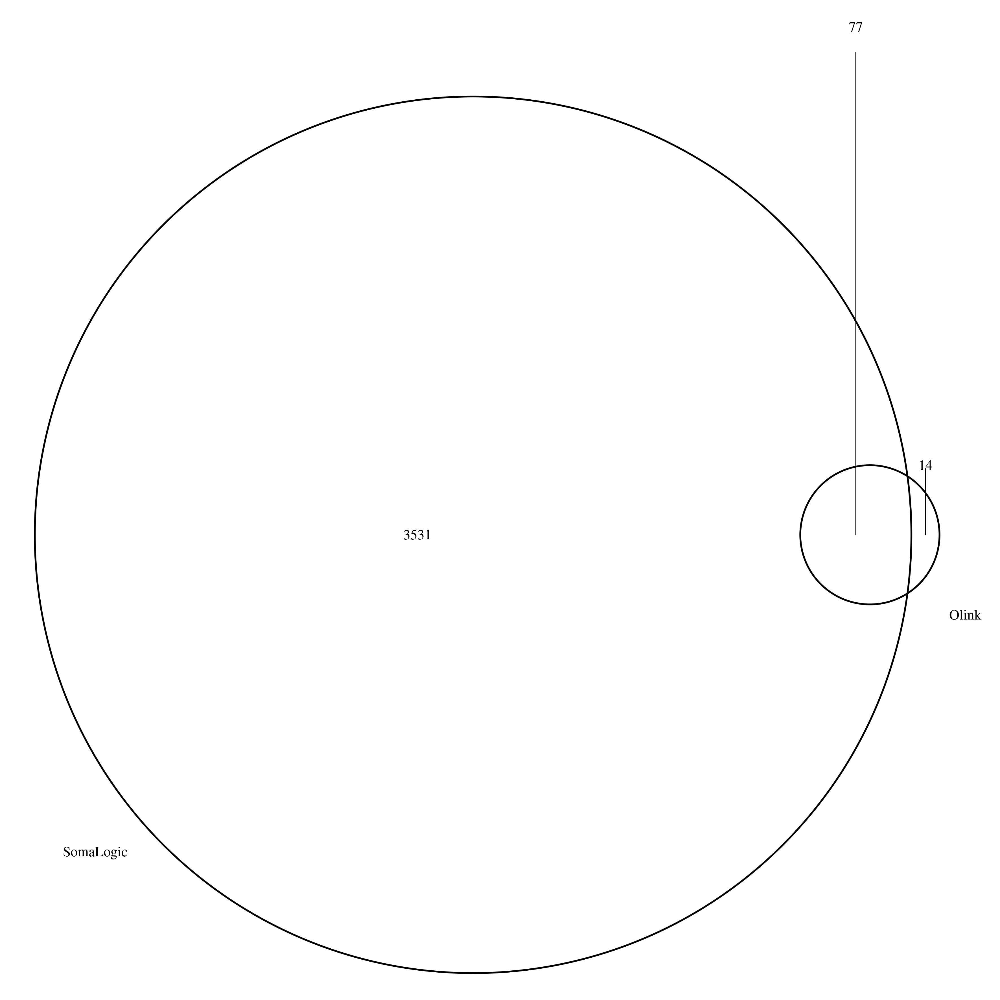

Supplementary notes#
This page was initiated with conditional analysis and fine-mapping, and now expanded with many other threads of the analysis.
Signal selection#
This is illustrated with neale.sh for Neale UKB data (HbA1c).
Conditional analysis and fine-mapping#
The INTERVAL data is used as reference panel. The logic of this specific directory is a simple solution of the dilemma that the reference data, possibly like others, uses reference sequence ID (rsid) whenever possible. However, during meta-analysis the practice of using rsids is undesirable so SNPID, i.e., chr:pos_A1_A2, (A1<=A2) is necessary.
After a rather long and laborious process involving many software, it turned out a simple way out is to obtain sentinels using SNPID but return to rsids at this stage and forward. The implementation here reflects this. The file INTERVAL.rsid contains SNPID-rsid mapping and could be generated from programs such as qctool/bgenix/plink. A related file is snp_pos containing rsid -- chr:pos mappings; for instance this could be built from dbSNP.
A note on regions is ready. It is attractive to use the last genomic region from iterative merging for analysis and perhaps a flanking version. This is more appropriate than genome-wide hard and fast 10MB windows or approximately independent LD blocks. For the latter, we found that the boundaries from the distributed 1000Genomes project were often inappropriate and one may not attempt to compute them for specific reference panel. Nevertheless, the iterative procedure actually just does empirically. Again the HLA region is condensed.
The last point regards software finemap, which uses summary statistics associated with the reference panel rather than that from meta-analysis.
| File | Description |
|---|---|
| NLRP2.sh | the exclusion list |
| cs.sh | Credible sets |
| ma.sh | INF1 sumstats |
| INTERVAL-ma.sh | INTERVAL sumstats |
| prune.sh | pruning |
| slct.sh | GCTA --cojo-slct analysis |
| finemap.sh | finemap analysis |
| jam.sh | JAM analysis |
| st.sh | batch command file |
| cs/, finemap/, jam/, prune/, work/ | working directories |
Steps
st.sh conceptually executes the following elements,
Note that the GCTA .ma, jma.cojo, .ldr.cojo become -rsid.ma, -rsid.jma.cojo, -rsid.ldr.cojo, respectively; the same are true for files related to finemap.
Variant annotation#
This is exemplified with vep.sh. GARFIELD analysis is furnsihed with garfield.sh. Specific and collective enrichment can be found in magma.sh and rGREAT.sh.
Known pQTLs#
Program cvd1.sh was used to obtain SCALLOP-CVD1 summary statistics. pQTL.R was used for QTL lookup.
Colocalization analysis#
eQTL lookup is done with PhenoScanner via eQTL.R, eQTLGen.sh and GTEx via GTEx-ps.R, GTEx-ps.sh and GTEx-ps-jma.sh.
Credible set lookup from GTEx v8 is furnished with GTEx-cs.sh and GTEx-cs-jma.sh.
Eearlier experiments were done with coloc.sb (clumsy) and coloc.R (with pQTLtools) as well as fastenloc.sb.
Multitrait counterparts were also done with HyPrColoc as in rs12075.sh and LTBR.sh (stack_assoc_plot + HyPrColoc/PWCoCo) and LTBR.sh contains a routine to generate tabix-indexed blood cell traits. Stacked association plots were done with IL.18-rs385076.sh and OPG-TRANCE.sh.
Mendelian Randomization#
There has been a major overhaul by refocusing on cis-pQTLs using GSMR involving both immune-mediated traits and COVID outcomes. These have been implemented in mr.sh and mr.sb. To get around the mishap with rsids we switched back to SNPids; we found the options --clump-r2 0.1 --gsmr-snp-min 10 make more sense for instance with IL-12B it would retain the sentinel and also the significant MR results on inflammatory bowel disease. Earlier we coded specifically for HGI analysis, in particular aiming for four test statistics and better quality graphics.
It turned to be more efficient in cis-pQTL analyses to extract the relevant variants involving in the analysis, rather than using whole-genome reference files. This led to ref/, prot/, /trait directories for reference, protein and trait data, respectively.
The GSMR implementation started with CAD/FEV1 (now with gsmr.sh, gsmr.sb, gsmr.R) and then HGI as gsmr_HGI.* and pQTLMR/MR (HGI.sh, HGI.R), and +/- 1MB (rs635634.sh).
Earlier on, a pQTL-based MR analysis is furnished with pqtlMR.sh.
Immune-mediatd traits from OpenGWAS is obtained via OpenGWAS.sh. pqtlGWAS.R was used for pQTL-GWAS lookup.
Nested PGS model#
A nested predictive model based on genotype data G, which link with proteins P1, P2, ..., Pn as predictors for outcome y.
Without loss of generality, we have genotype data G, which link with proteins P1, P2, P3 as predictors for outcome y.

The figure is obtained with
dot -Tpng grViz.gv -ogrViz.png
which also be obtained from RStudio for somewhat larger size.
File fusion_twas.sb initiated a FUSION TWAS experiment.
Alternative routes are T(P)WAS with fusion_twas and EWAS with EWAS-fusion.
Shown below is an example for IL-12B, (EWAS, joint/conditional) Q-Q and Manhattan plots from ewas-plot.R.

Summary statistics#
This is implemented with gwasvcf.sh and gwas2vcf.sb which includes some operations on VCF files. However, we found there is loss of information if enforcing use of RSid.
Linear regression#
We first make some preparations.
Let \(\mbox{x} = SNP\ dosage\). Note that \(\mbox{Var}(\mbox{x})=2f(1-f)\), \(f=MAF\) or \(1-MAF\) by symmetry.
Our linear regression model is \(\mbox{y}=a + b\mbox{x} + e\). We have \(\mbox{Var}(\mbox{y}) = b^2\mbox{Var}(\mbox{x}) + \mbox{Var}(e)\). Moreover, \(\mbox{Var}(b)=\mbox{Var}(e)(\mbox{x}'\mbox{x})^{-1}=\mbox{Var}(e)/S_\mbox{xx}\), we have \(\mbox{Var}(e) = \mbox{Var}(b)S_\mbox{xx} = N \mbox{Var}(b) \mbox{Var}(\mbox{x})\). Consequently, let \(z = {b}/{SE(b)}\), we have
Moreover, the mean and the variance of the multiple correlation coefficient or the coefficient of determination (\(R^2\)) are known1 to be \({1}/{(N-1)}\) and \({2(N-2)}/{\left[(N-1)^2(N+1)\right]}\), respectively.
We also need some established results of a ratio (R/S)2, i.e., the mean
and more importantly the variance
where \(\mu_R\), \(\mu_S\), \(\sigma_R^2\), \(\sigma_S^2\) are the means and the variances for R and S, respectively.
Finally, we need some facts about \(\chi_1^2\), \(\chi^2\) distribution of one degree of freedom. For \(z \sim N(0,1)\), \(z^2\sim \chi_1^2\), whose mean and variance are 1 and 2, respectively.
We now have the following results.
-
The proportion of variants explained (PVE).
From above we have
\[ \begin{align} \mbox{PVE}_{\mbox{linear regression}} & = \frac{\mbox{Var}(b\mbox{x})}{\mbox{Var}(\mbox{y})} \hspace{100cm} \\ & = \frac{\mbox{Var}(\mbox{x})b^2}{\mbox{Var}(\mbox{x})(b^2+N\mbox{Var}(b))} \\ & = \frac{\mbox{z}^2}{\mbox{z}^2+N} \end{align} \]On the other hand, for a simple linear regression \(R^2\equiv r^2\) where \(r\) is the Pearson correlation coefficient, which is readily from the \(t\)-statistic of the regression slope, i.e., \(r={t}/{\sqrt{t^2+N-2}}\). so assuming \(t \equiv \ z \sim \chi_1^2\)
\[ \begin{align} \mbox{PVE}_{t-\mbox{statistic}} & = \frac{\chi^2}{\chi^2+N-2} \hspace{100cm} \end{align} \]To obtain coherent estimates of the asymptotic means and variances of both forms we resort to variance of a ratio (R/S). All the required elements are listed in a table below.
Characteristics Linear regression \(t\)-statistic \(\mu_R\) 1 1 \(\sigma_R^2\) 2 2 \(\mu_S\) \(N+1\) \(N-1\) \(\sigma_S^2\) 2 2 \(\mbox{Cov}(R,S)\) 2 2 then we have the means and the variances for PVE.
Characteristics Linear regression \(t\)-statistic mean \(\frac{1}{N+1}\left[1-\frac{2}{N+1}+\frac{2}{(N+1)^2}\right]\) \(\frac{1}{N-1}\left[1-\frac{2}{N-1}+\frac{2}{(N-1)^2}\right]\) variance \(\frac{2}{(N+1)^2}\left[1-\frac{1}{N+1}\right]^2\) \(\frac{2}{(N-1)^2}\left[1-\frac{1}{N-1}\right]^2\) Finally, our approximation of PVE for a protein with \(T\) independent pQTLs from the meta-analysis
Characteristics Linear regression \(t\)-statistic estimate \(\sum_{i=1}^T{\frac{\chi_i^2}{\chi_i^2+N_i}}\) \(\sum_{i=1}^T{\frac{\chi_i^2}{\chi_i^2+N_i-2}}\) variance \(\sum_{i=1}^T\frac{2}{(N_i+1)^2}\) \(\sum_{i=1}^T\frac{2}{(N_i-1)^2}\) -
When \(\mbox{Var}(\mbox{y})=1\), as in cis eQTLGen data, we have \(b\) and its standard error (se) as follows,
\[ \begin{align} b & = z/d \hspace{100cm} \\ se & = 1/d \end{align} \]where \(d = \sqrt{2f(1-f)(z^2+N)}\).
Other mathematical expressions#
The prior probability for \(i\) out of \(m\) variants is causal, is obtained as a binomial probability
\(p(i)={m\choose{i}}{\left(\frac{i}{m}\right)^i\left(1-\frac{i}{m}\right)^{m-i}}\)
The posterior number of causal signals in the genomic region is obtained as the expectation \(\sum_i p(i|\mbox{data}) \times i\). The search of total number of configurations
\(\sum_{i=1}^k{m\choose{i}}\)
A proteome-wide analogy \(z_{PWAS}\) is made to (transcriptome)wide association statistic originally proposed for gene expression data. For a given Protein of interest P for which GWAS summary statistics \(z_P\) is available, the corresponding Wald statistic for PWAS is defined such that
\(z_{PWAS} = \frac{w^T_{P}z_P}{\sqrt{w^T_{P}Vw_{P}}}\)
where \(w_{P}\) is a weight associated with protein abundance level and V covariance matrix for \(z_P\), respectively. This also mirrors the EWAS-fusion software for methylation data using epigenomewide association statistics.

SomaLogic overlap#
The overlap is characterised with Olink.R which also gives a Venn diagram.
UniProt IDs#
The list of proteins on inflammation is within one of the Olink panels (as in Olink validation data all panels.xlsx) each containing 92 proteins. Information contained in these panels can be retrieved into R via Olink.R, which also attempts to compromise earlier version and annotations. Nevertheless O43508 is replaced with Q4ACW9 for TWEAK.
BDNF has recently been removed from the assay and replaced with CD8A, https://www.olink.com/bdnf-info/, and there are also changes on TNF and IFN.gamma, https://www.olink.com/inflammation-upgrade/.
A UniProt ID may be associated with multiple chromosomes, e.g., Q6IEY1 with chromosomes 1 and 5. While inf1.csv edits Q4ACW9, inf2.csv is inline with UCSC with respect to P12034 and P30203.
The use of uniprot IDs is noted in two aspects,
-
The protein list in inf1.csv notes both O43508 and Q4ACW9.
-
Q8NF90 and Q8WWJ7 were not listed at the UCSC, their availability on UniProt seem to be for backward compatibility as on query they point to P12034 and P30203 (Q8WWJ7_HUMAN should have been CD6_HUMAN). hgTables.tsv is based on UCSC, checked over UniProt IDs as follows,
grep inf1 doc/olink.prot.list.txt | \
sed 's/inf1_//g;s/___/\t/g' > inf1.list
join -t$'\t' -12 -24 \
<(sort -k2,2 inf1.list) \
<(awk '{split($4,f,"-"); $4=f[1]; if(!index($1,"_")) print}' OFS='\t' doc/hgTables.tsv | sort -k4,4) \
> 12
# 90 lines
wc -l 12
# Q8NF90 (FGF.5), Q8WWJ7 (CD6) are missing
join -v2 -22 12 <(sort -k2,2 inf1.list)
rm 12
Likewise, olink.inf.panel.annot.tsv from olink.annotation.R also has the following two entries
| "target" | "target.short" | "uniprot" | "panel" | "prot.on.multiple.panel" | "panels.with.prot" | "hgnc_symbol" | ... |
|---|---|---|---|---|---|---|---|
| "Fibroblast growth factor 5 (FGF-5)" | "FGF-5" | "Q8NF90" | "inf" | FALSE | NA | NA | |
| "T-cell surface glycoprotein CD6 isoform (CD6)" | "CD6" | "Q8WWJ7" | "inf" | FALSE | NA | NA |
whose hgnc_symbol can be amended.
Auxiliary files#
The following table lists various other aspects not documented above; many can be seen as a skeleton for further work.
| File | Description |
|---|---|
| chembl.sh | toy CHEMBL queries |
| CRP.sh | an inflammation score |
| circos.* | circos/circlize scripts |
| efo.R | experimental factor ontology |
| epigraphdb-pleiotropy.R | horizontal and vertical pleiotropy |
| epigraphdb-ppi.R | PPI using EpiGraphDB |
| gdigt.R | GDI and gene-trials |
| GREP.sh | GREP script |
| h2pve.* | h2/pve summary |
| inbio-discover.R | gene lists |
| pheweb.Rmd | Data extraction from pheweb.jp |
| qqman.sb | Q-Q/Manhattan plots under CSD3 |
| rentrez.sh | reuse of rentrez |
| Somascan-Olink.* | Somascan/Olink overlap |
| stringdb.sh | STRINGdb |
| tables.R | code to create Excel Tables |
| uniprot.R | UniProt IDs to others |
| utils.sh | utilties |
| wgcna.sh | experiment on modules |
Date last changed: 14/11/2021
-
Kotz, S., Read, C.B., Balakrishnan, N., Vidakovic, B. & Johnson, N.L. Encyclopedia of Statistical Sciences. 2nd edn (John Wiley & Sons, Inc., Hoboken, New Jersey, 2006). ↩